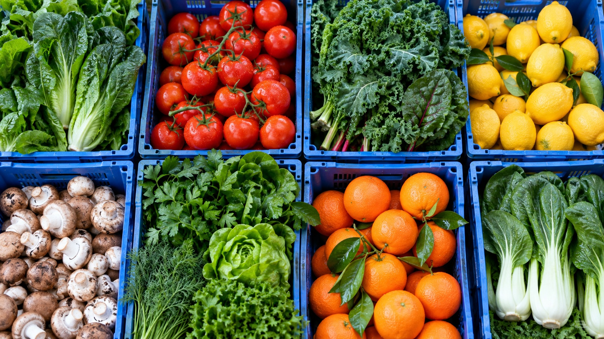

농산 · 채소
잎채소, 뿌리채소, 버섯, 과일 등 주방에서 매일 사용하는 신선한 기본.

FRESH THINKING. BETTER BUSINESS.
채소부터 육류, 매장의 기본이 되는 식자재까지.
좋은 식재료가 좋은 장사의 시작이니까.
OUR SELECTION
매일 쓰는 재료부터 메뉴를 완성하는 식자재까지. 업종에 맞는 공급 품목을 살펴보세요.
YOUR BRAND, IN THIS STYLE
F04 · 싱싱루트 — 식자재 도매 스타일
브랜드명·사진·문구는 고객님의 매장에 맞게 제작합니다.